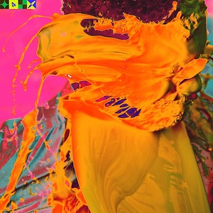
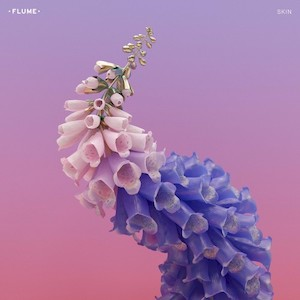
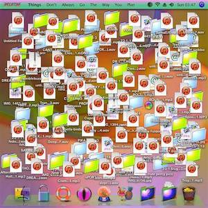
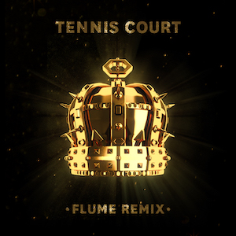

Flume
Photo by Kmeron on Flicker.com
The alias of electronic musician and producer Harley Edward Streten, Flume makes atmospheric dance music inspired by house and U.K. garage. Recruiting collaborators from across genres, he rose into the main-stage ranks with his 2012 debut and his Grammy-winning 2016 sophomore effort, Skin, both of which topped the album chart in his native Australia. Flume has been one of my favorite artists since 2017; his music has accompanied me throughout many eras of my life.



